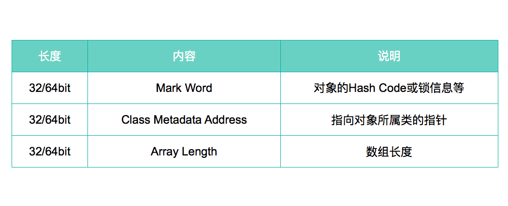
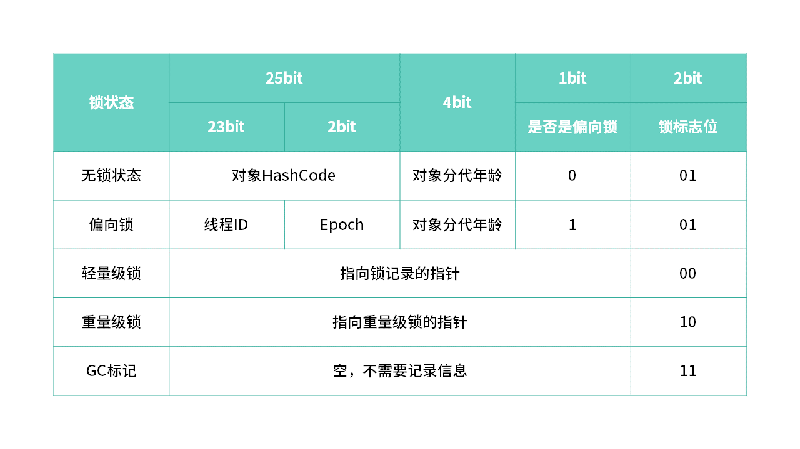
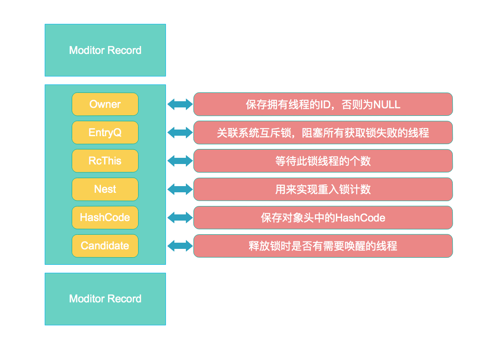

详解synchronized的实现原理
synchronized是Java语言提供的一个非常有用的关键字，它实现了并发编程的原子性、可见性和有序性。利用synchronized关键字我们可以很简单地写出并发安全的程序，但是synchronized是一个重量级锁，在Java的早期版本它的效率比较低，但是随着Java SE 1.6对synchronized进行的各种优化后，它的效率在某些情况下甚至比显示锁还要高。
那么synchronized是怎样实现并发编程的原子性、可见性和有序性的呢？synchronized为了提高效率，又是怎样优化的呢？下面我们一起来学习下。
实现原理
实现基础
Java中每一个对象都可以作为锁，这是synchronized实现同步的基础，具体表现为以下3种形式：
- 对于普通同步方法，锁是当前实例对象
- 对于静态同步方法，锁是当前类的Class对象
- 对于同步方法块，锁是synchronized括号里面的对象
当一个线程试图执行同步代码块时，它必须先获得锁，否则否则就会被阻塞。当线程退出代码块或抛出异常时，必须释放锁，以便让其他线程获得锁。
Java对象头
任意一个Java对象都可以作为一把锁，那么这把锁是否已被某个线程获得、又被哪个线程获得等信息记录在哪里呢？答案就是对象头。
虚拟机使用3个字宽来存储数组类型对象的对象头，而对于非数组类型的对象，则使用2个字宽，这是因为对于数组类型需要过一个字宽来表示数组的长度。在32位虚拟机中，一个字宽等于4个字节，即32bit。

现在我们重点讲下和锁相关的Mark Word，它存储了对象自身的运行时数据，比如HashCode、GC分代年龄、锁状态标志等。对象需要存储的运行时数据很多，其实已经超出了32位，考虑到虚拟机的空间效率，Mark Word被设计成一个非固定的数据结构，它会根据对象的状态复用自己的存储空间。Mark Word在不同状态下存储的内容如下表所示。

Monitor
从JVM规范中我们可以看到synchronized的实现原理，JVM是基于进入和退出Monitor对象来实现方法同步和代码块同步的，但两者的实现细节不一样。
同步代码块 同步代码块是使用monitorenter和monitorexit指令实现的，monitorenter指令插入到同步代码块的开始位置，monitorexit指令插入到同步代码块的结束位置，JVM需要保证每一个monitorenter都有一个monitorexit与之相对应。任何对象都有一个monitor与之相关联，当且一个monitor被持有之后，它将处于锁定状态。线程执行到monitorenter指令时，将会尝试获取对象所对应的monitor所有权，即尝试获取对象的锁。
同步方法 synchronized方法则会被翻译成普通的方法调用和返回指令如:invokevirtual、areturn指令，在VM字节码层面并没有任何特别的指令来实现被synchronized修饰的方法，而是在Class文件的方法表中将该方法的access_flags字段中的synchronized标志位置1，表示该方法是同步方法并使用调用该方法的对象或该方法所属的Class在JVM的内部对象表示Klass做为锁对象。
那么什么是Monitor呢？Monitor其实是一种同步工具，也可以说是一种同步机制，它通常被描述为一个对象。任何Java对象都有一个monitor与之关联，当线程执行到monitorenter时，会尝试获取对象所对应monitor的所有权，即尝试获取对象的锁，当一个monitor被持有后，它将处于锁定状态。
monitor record是线程私有的数据结构，每一个线程都有一个可用monitor record列表，同时还有一个全局的可用列表。monitor record结构如下图所示。

重量级锁实现原理
重量级锁是synchronized的最原始实现，学习了上面的知识后我们可以总结出它的实现过程大致如下：
- 线程执行同步代码块之前先要执行monitorenter指令，将会尝试获取对象所对应的monitor的所有权，即尝试获得对象的锁。
- 如果对象对应的monitor已经被其他线程获取，则线程将会被阻塞。
- 如果获取到了对象对应的monitor，则更改对象头中Mark Word以及对应monitor record中值。比如，Mark Word中把锁标志位改成10，其余30bit数据存储指向monitor record的地址；monitor record中Owner保存当前线程的ID，Nest值改为1，HashCode保存原来Mark Word中的HashCode和GC age。
- 如果当前线程再次通过monitorenter指令获取已经获得的锁，那么对应monitor record中的Nest加1，以实现重入锁。
- 当线程退出同步代码块时，执行monitorexit指令，Nest减1，当Nest为0时，释放锁。
锁优化
通过分析重量级锁的实现原理我们发现，当线程获取锁失败后会进入阻塞状态并等待被唤醒，由于线程的阻塞/唤醒需要CPU在用户态和内核态间切换，频繁的转换对CPU负担很重，进而对并发性能带来很大的影响。
自旋锁
- 痛点 ：由于线程的阻塞/唤醒需要CPU在用户态和内核态间切换，频繁的转换对CPU负担很重，进而对并发性能带来很大的影响。
- 现象 ：通过大量分析发现，对象锁的锁状态通常只会持续很短一段时间，没必要频繁地阻塞和唤醒线程。
- 原理 ：通过执行一段无意义的空循环让线程等待一段时间，不会被立即挂起，看持有锁的线程是否很快释放锁，如果锁很快被释放，那当前线程就有机会不用阻塞就能拿到锁了，从而减少切换，提高性能。
- 隐患 ：若锁能很快被释放，那么自旋效率就很好(真正执行的自旋次数越少效率越好，等待时间就少)；但若是锁被一直占用，那自旋其实没有做任何有意义的事但又白白占用和浪费了CPU资源，反而造成资源浪费。
- 注意 ：自旋次数必须有个限度(或者说自旋时间)，如果超过自旋次数(时间)还没获得锁，就要被阻塞挂起。
- 使用 ： JDK1.6以上默认开启-XX:+UseSpinning，自旋次数可通过-XX:PreBlockSpin调整，默认10次。
适应性自旋锁
- 痛点 ：由于自旋锁只能指定固定的自旋次数，但由于任务的差异，导致每次的最佳自旋次数有差异。
- 原理 ：通过引入”智能学习”的概念，由前一次在同一个锁上的自旋时间和锁的持有者的状态来决定自旋的次数，换句话说就是自旋的次数不是固定的，而是可以通过分析上次得出下次，更加智能。
- 实现 ：若当前线程针对某锁自旋成功，那下次自旋此时可能增加(因为JVM认为这次成功是下次成功的基础)，增加的话成功几率可能更大；反正，若自旋很少成功，那么自旋次数会减少(减少空转浪费)甚至直接省略自旋过程，直接阻塞(因为自旋完全没有意义，还不如直接阻塞)。
- 补充 ：有了自适应自旋锁，随着程序运行和性能监控信息的不断完善，JVM对锁的状况预测会越来越准确，JVM会变得越来越智能。
锁粗化
- 痛点 ：多次连接在一起的加锁、解锁操作会造成不必要的性能损耗。
- 原理 ：将多次连接在一起的加锁、解锁操作合并为一次，将多个连续的锁扩展成一个范围更大的锁。
- 使用 ：将多个彼此靠近的同步块合同在一个同步块或把多个同步方法合并为一个方法。
- 补充 ：在JDK内置的API中，例如StringBuffer、Vector、HashTable都会存在隐性加锁操作，可合并。
/**
* StringBuffer是线程安全的字符串处理类
* 每次调用stringBuffer.append方法都需要加锁和解锁，如果虚拟机检测到有一系列连串的对同一个对象加锁和解锁操作，就会将其合并成一次范围更大的加锁和解锁操作，即在第一次append方法时进行加锁，最后一次append方法结束后进行解锁
*/
StringBuffer stringBuffer = new StringBuffer();
public void append(){
stringBuffer.append("kira");
stringBuffer.append("sally");
stringBuffer.append("mengmeng");
}
锁消除
- 痛点 ：根据代码逃逸技术，如果判断到一段代码中，堆上的数据不会逃逸出当前线程，那么可以认为这段代码是线程安全的，不必要加锁。
- 原理 ： JVM在编译时通过对运行上下文的描述，去除不可能存在共享资源竞争的锁，通过这种方式消除无用锁，即删除不必要的加锁操作，从而节省开销。
- 使用 ： 逃逸分析和锁消除分别可以使用参数-XX:+DoEscapeAnalysis和-XX:+EliminateLocks(锁消除必须在-server模式下)开启。
- 补充 ：在JDK内置的API中，例如StringBuffer、Vector、HashTable都会存在隐性加锁操作，可消除。
/**
* 比如执行10000次字符串的拼接
*/
public static void main(String[] args) {
SynchronizedDemo synchronizedDemo = new SynchronizedDemo();
for (int i = 0 ; i < 10000 ; i++){
synchronizedDemo.append("kira","sally");
}
}
public void append(String str1,String str2){
//由于StringBuffer对象被封装在方法内部，不可能存在共享资源竞争的情况
//因此JVM会认为该加锁是无意义的，会在编译期就删除相关的加锁操作
//还有一点特别要注明：明知道不会有线程安全问题，代码阶段就应该使用StringBuilder
//否则在没有开启锁消除的情况下，StringBuffer不会被优化，性能可能只有StringBuilder的1/3
StringBuffer stringBuffer = new StringBuffer();
stringBuffer.append(str1).append(str2);
}
锁升级
- 从JDK1.6开始，锁一共有四种状态：无锁状态、偏向锁状态、轻量锁状态、重量锁状态。
- 锁的状态会随着竞争情况逐渐升级，锁允许升级但不允许降级。
- 不允许降级的目的是提高获得锁和释放锁的效率。
重量级锁
重量级锁通过对象内部的monitor实现(见上文的)。
轻量级锁
- 痛点 ：由于线程的阻塞/唤醒需要CPU在用户态和内核态间切换，频繁的转换对CPU负担很重，进而对并发性能带来很大的影响。
- 优势 ： 在竞争比较小的前提下，减少传统的重量级锁使用操作系统互斥量产生的性能消耗。
- 劣势 ：在多线程竞争激烈的情况下，除了互斥开销外，还会增加额外的CAS操作的开销，轻量级锁甚至比重量级锁还要慢。
- 升级时机 ： 当关闭偏向锁功能或多线程竞争偏向锁会导致偏向锁升级为轻量级锁。
轻量级锁加锁
- 线程在执行同步块之前，JVM会先在当前线程的栈帧中创建用于存储锁记录的空间，并将对象头中的Mark Word复制到锁记录中(Displaced Mark Word-即被取代的Mark Word)做一份拷贝。
- 拷贝成功后，线程尝试使用CAS将对象头的Mark Word替换为指向锁记录的指针（将对象头的Mark Word更新为指向锁记录的指针，并将锁记录里的Owner指针指向Object Mark Word）。
- 如果更新成功，当前线程获得锁，继续执行同步方法。
- 如果更新失败，表示其他线程竞争锁，当前线程便尝试使用自旋来获取锁，若自旋后没有获得锁，此时轻量级锁会升级为重量级锁，当前线程会被阻塞。
轻量级锁解锁
- 解锁时会使用CAS操作将Displaced Mark Word替换回到对象头。
- 如果解锁成功，则表示没有竞争发生。
- 如果解锁失败，表示当前锁存在竞争，锁会膨胀成重量级锁，需要在释放锁的同时唤醒被阻塞的线程，之后线程间要根据重量级锁规则重新竞争重量级锁。
偏向锁
- 痛点 ： Hotspot作者发现在大多数情况下不存在多线程竞争的情况，而是同一个线程多次获取到同一个锁，为了让线程获得锁代价更低，因此设计了偏向锁 (这个跟业务使用有很大关系)
- 优势 ：偏向锁只需要在置换ThreadID的时候依赖一次CAS原子指令，其余时刻不需要CAS指令(相比其他锁)。
- 隐患 ：由于一旦出现多线程竞争的情况就必须撤销偏向锁，所以偏向锁的撤销操作的性能损耗必须小于节省下来的CAS原子指令的性能消耗（这个通常只能通过大量压测才可知）。
- 对比 ：轻量级锁是为了在线程竞争比较小时提高性能，而偏向锁则是在只有一个线程执行同步块时进一步提高性能。
偏向锁加锁
- 当一个线程访问同步块并获取到锁时，会在对象头和栈帧中的锁记录里存储偏向锁的线程ID，以后该线程在进入和退出同步块时不需要花费CAS操作来加锁和解锁，而是先简单检查对象头的MarkWord中是否存储了线程。
- 如果已存储，说明线程已经获取到锁，继续执行任务即可。
- 如果未存储，则需要再判断当前锁否是偏向锁(即对象头中偏向锁的标识是否设置为1，锁标识位为01)。
- 如果没有设置，则使用CAS竞争锁（说明此时并不是偏向锁，一定是等级高于它的锁）。
- 如果设置了，则尝试使用CAS将对象头的偏向锁指向当前线程，也就是结构中的线程ID
偏向锁撤销
- 偏向锁使用一种等到竞争出现才释放锁的机制，只有当其他线程竞争锁时，持有偏向锁的线程才会释放锁。
- 偏向锁的撤销需要等待全局安全点(该时间点上没有字节码正在执行)。
- 首先会暂停拥有偏向锁的线程并检查该线程是否存活：
- 如果线程非活动状态，则将对象头设置为无锁状态（其他线程会重新获取该偏向锁）。
- 如果线程是活动状态，拥有偏向锁的栈会被执行，遍历偏向对象的锁记录，并将对栈中的锁记录和对象头的MarkWord进行重置。
- 要么重新偏向于其他线程（即将偏向锁交给其他线程，相当于当前线程”被”释放了锁）。
- 要么恢复到无锁或者标记锁对象不适合作为偏向锁(此时锁会被升级为轻量级锁)最后唤醒暂停的线程，被阻塞在安全点的线程继续往下执行同步代码块。
- 唤醒暂停的线程，被阻塞在安全点的线程继续往下执行同步代码块。
偏向锁关闭
- 偏向锁在JDK1.6以上默认开启，开启后程序启动几秒后才会被激活。
- 有必要可以使用JVM参数来关闭延迟
-XX：BiasedLockingStartupDelay = 0。 - 如果确定锁通常处于竞争状态，则可通过JVM参数
-XX:-UseBiasedLocking=false关闭偏向锁，那么默认会进入轻量级锁。
参考文档
- 《Java并发编程的艺术》
- Java多线程–Monitor对象（一）
- Java 8 并发篇 - 冷静分析 Synchronized（下）
本作品采用知识共享署名 4.0 国际许可协议进行许可，转载请注明原文链接
本文链接：https://schhx.github.io/2018/06/27/详解synchronized的实现原理/